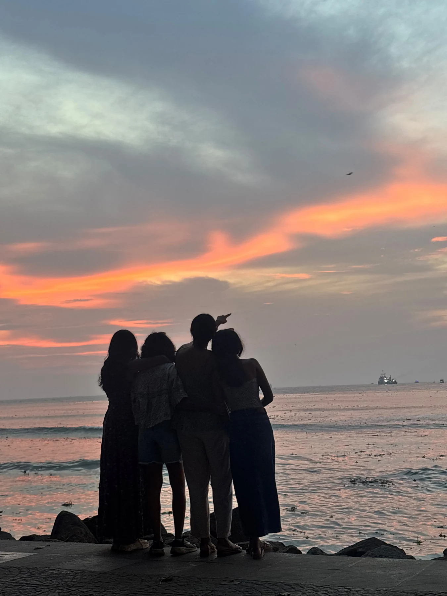
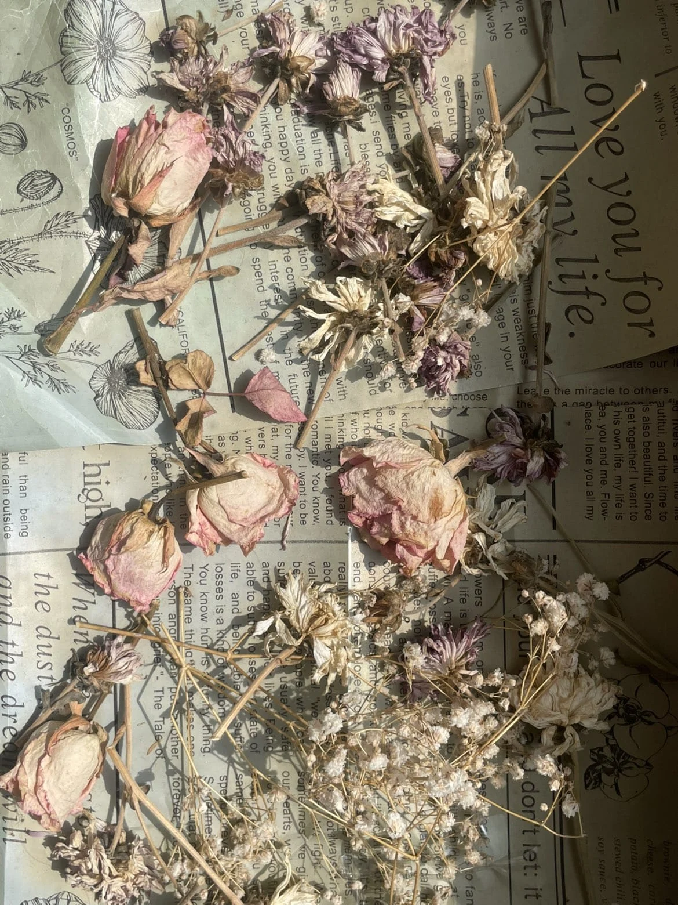
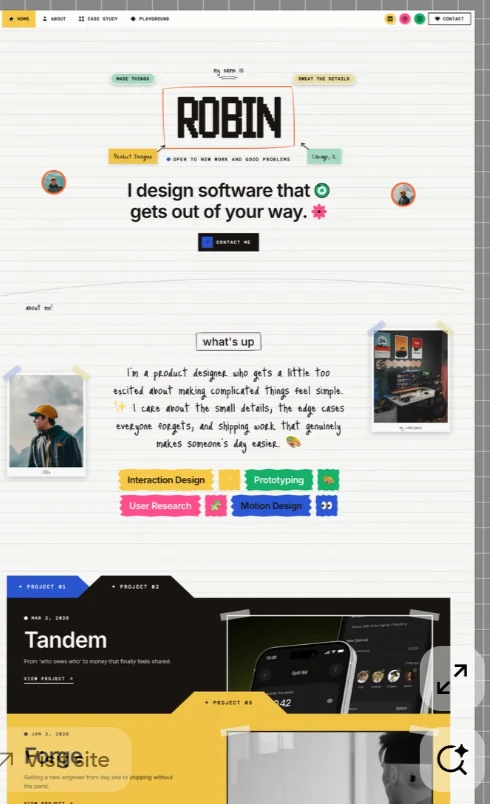
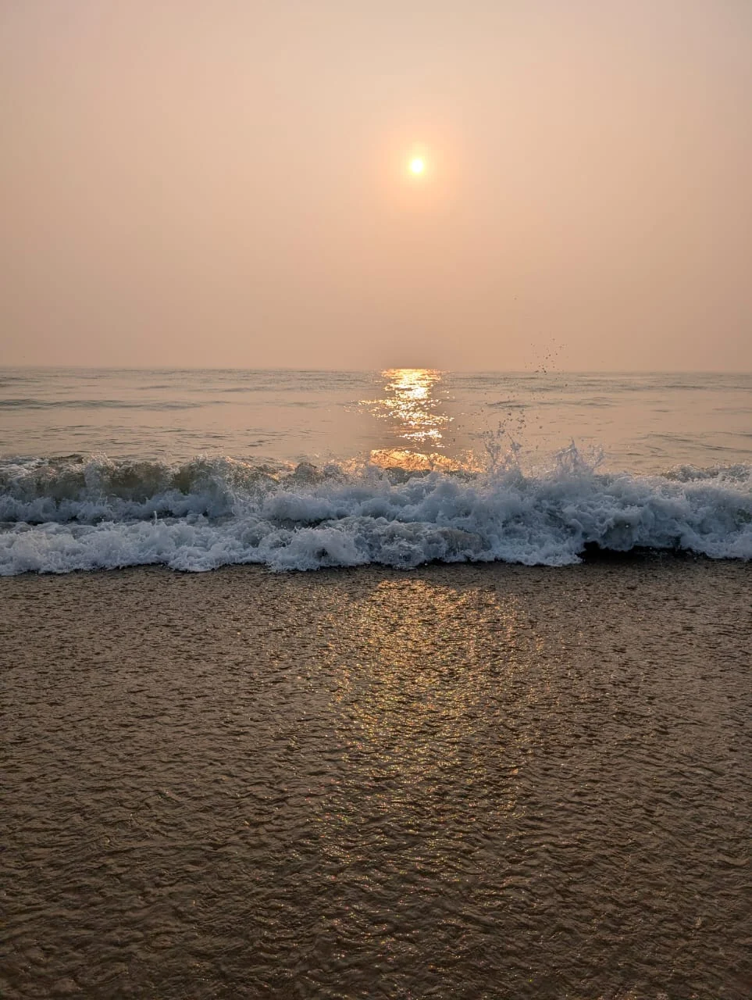

How toys go from an idea to mass production
From ideation and prototyping to costing, BIS standards, quality checks and manufacturing.
I'm an Industrial Design student, a curious observer and a collector of little details. I love filter coffee just as much as iced coffee, finance as much as form, and experimenting with things I haven't tried before. I can spend an unreasonable amount of time shade-matching paint or concealer, noticing colours, textures and tiny differences. Design is one way I make sense of the world — curiosity is the bigger thing.
Back to the work ↗
I like observing how people interact with the world around them. Sometimes that turns into a design question; sometimes it stays as a little note, a photograph or a conversation I keep thinking about.
I love experimenting — with materials, tools, recipes, ideas and sometimes a new route home. I notice small things, ask a lot of questions and enjoy learning by actually trying. I used to practise karate, and I still like activities that teach patience, focus and a bit of courage.
Some days it's a place, sometimes it's a tiny detail, sometimes it's just a moment I want to remember. Here's a small visual diary — a few of the things I've shared along the way.







Places I want to return to. People I want to remember. Flowers I couldn't leave behind. Tiny details that made an ordinary day feel worth keeping.
Long walks and sunset hunting. Journaling and keeping memories. Conversations, people-watching and exploring new places. I love filter coffee and iced coffee, have a soft spot for finance and the stock market, and genuinely enjoy shade-matching — whether it is a paint swatch or a concealer. I used to practise karate, and I still enjoy swimming and trying things that ask for patience.
I find inspiration in ordinary things: a confusing sign, a product that feels surprisingly intuitive, a service that makes someone feel seen, or a material with an unexpected second life.
Some were planned. Some happened because I got curious. A few happened because life said, “well, you're figuring this out now.”
From ideation and prototyping to costing, BIS standards, quality checks and manufacturing.
Learning about investing, where to invest, how to think about risk and why money deserves curiosity too.
Finally learning how to get on a skateboard, balance and actually use one.
A new life skill and an experiment in self-reliance. 😂
Learning delegation, coordination, patience and how to keep everyone moving towards one goal.
Exploring 3D modelling and learning a new design tool.
Going beyond asking questions to using AI for research, brainstorming, building prototypes and experimenting with new technologies.
Learning that not everything happens at my pace, and that people, processes and life need time.
Adding a little traditional cooking to my skill set.
Learning an art that takes patience, practice and surprisingly good finger coordination.
Exploring AI tools, digital products, automation, emerging tech and how quickly the world is changing.
At the moment, I'm working towards making Orbit a functional hospital workflow product and exploring an inclusive play intervention. Both projects are teaching me to think beyond the individual object or screen and consider the people, systems and contexts around them.
I'm interested in the space where research, design, technology and business meet — and in the kind of work that makes a real difference to someone's everyday experience.
Stay curious. Keep trying. Ask one more question. Save the flower. Order the iced coffee and then get a filter coffee anyway.
I love plucking a flower or leaf from a day and preserving it. Before you go, pick one. Add your name and take a tiny piece of this visit with you.